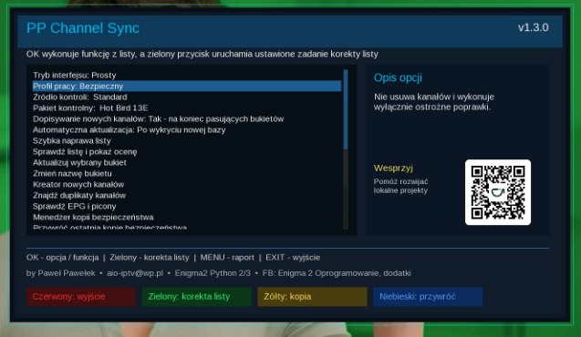

Witam na mojej stronie Paweł Pawełek
Ważna aktualizacja naprawcza • listy kanałów
PP Channel Sync 1.3.0
Nowa wersja wtyczki do bezpiecznej korekty list kanałów Enigma2. Aktualizacja naprawia problem z komunikatem „W paczce kontrolnej nie znaleziono pliku lamedb” i dodaje pełną obsługę baz lamedb oraz lamedb5.

Najważniejsza poprawka
lamedb, jak i nowszy format lamedb5, również w paczkach z nietypową strukturą katalogów lub z archiwami umieszczonymi wewnątrz innych archiwów.Co poprawiono w 1.3.0?
- pełna obsługa plików lamedb oraz lamedb5
- lepsze wykrywanie bazy kanałów w pobranych paczkach
- obsługa archiwów znajdujących się wewnątrz innych archiwów
- ochrona przed użyciem pustej lub uszkodzonej bazy
- usprawnione pobieranie list ze źródeł internetowych
- poprawiony wybór najnowszej dostępnej listy
- bezpieczniejsze rozpakowywanie pobranych plików
Kopie i bezpieczeństwo
- kopia bezpieczeństwa obejmuje także bukiety radiowe
- dodano kontrolę poprawności wykonanej kopii
- przy błędzie wtyczka automatycznie przywraca wcześniejszą konfigurację
- ograniczono liczbę przechowywanych kopii zapasowych
- dodano kontrolę sumy SHA-256 podczas aktualizacji wtyczki
- niekompletna lub uszkodzona paczka nie zmieni listy kanałów
Bezpieczna korekta listy
PP Channel Sync nie instaluje całkowicie nowej listy kanałów. Analizuje listę, która znajduje się już na tunerze, i wykonuje wyłącznie ostrożne korekty.
- poprawia parametry zmienionych kanałów satelitarnych
- zachowuje kolejność kanałów i układ bukietów użytkownika
- przed każdą zmianą wykonuje kopię bezpieczeństwa
- nie ingeruje w kanały DVB-T, DVB-C ani IPTV
- nie używa pustej lub uszkodzonej bazy kontrolnej
- w razie błędu wycofuje zmiany i przywraca wcześniejsze pliki
Raportowanie i diagnostyka
Rozszerzono komunikaty błędów i diagnostykę. Gdy wystąpi problem, szczegółowy raport zostanie zapisany w pliku:
/tmp/ppchannelsync_error.txtPrzy zgłaszaniu błędu należy podać model tunera, nazwę i wersję systemu, wersję Pythona oraz zawartość pliku raportu.
Obsługa wtyczki
- Uruchom PP Channel Sync z menu wtyczek Enigma2.
- Wybierz pakiet kontrolny zgodny z używaną konfiguracją satelitarną.
- Sprawdź ustawienia trybu pracy i automatycznej aktualizacji.
- Naciśnij zielony przycisk, aby rozpocząć korektę listy.
- Po zakończeniu przeczytaj komunikat i sprawdź raport.
Zdjęcie wtyczki
Aktualizacja i instalacja
Aktualizację można wykonać bezpośrednio z poziomu wtyczki. PP Channel Sync jest również dostępny do instalacji z poziomu AIO Panel.
wget -q -O - https://raw.githubusercontent.com/OliOli2013/PPChannelSync-Plugin/main/installer.sh | /bin/shPo instalacji zalecany jest restart interfejsu Enigma2.
opkg install --force-reinstall /tmp/enigma2-plugin-extensions-ppchannelsync_1.3.0_all.ipkInformacje
Wersja: 1.3.0
System: Enigma2 Python 2/3
Autor: by Paweł Pawełek
Kontakt: aio-iptv@wp.pl